Depart from Atlanta
- 7:30 PMParking
Valet at the international terminal
Valet is booked at ATL's international terminal.
Call 20 minutes out from your arrival to meet Valet: 800.913.8573, ext. 2 - 10:55 PMDeparts ATLFlight
ATL to EZE
Overnight to Buenos Aires (EZE), landing Friday at 9:45 AM local time.
Arrival + Meet the Team
- 9:45 AMLands EZETransfer
Driver from EZE to the hotel
A driver is confirmed for the airport pickup. Driver name and contact details are coming.
- 10:00 AMCheck-in
Casa Lucía, Meliá Collection
Early check-in at 10:00 AM is confirmed. Arroyo 841, Retiro.
- Brooke2605729995
- Ruben2605741830
- LinksMap
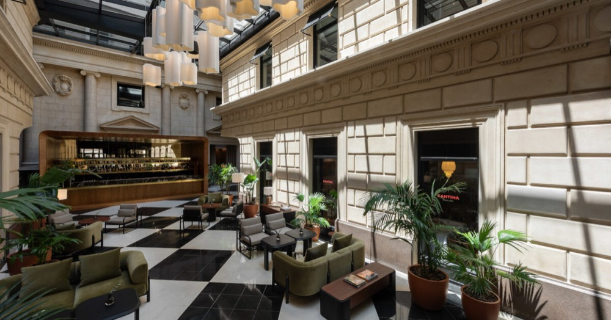
- BeforeShowDrinks
Pre-tango cocktails at Hierro Bodegón
At the bar before the show. Alternative: Florería Atlántico, Arroyo 872, open to 2 AM Fri and Sat (confirm its opening time).
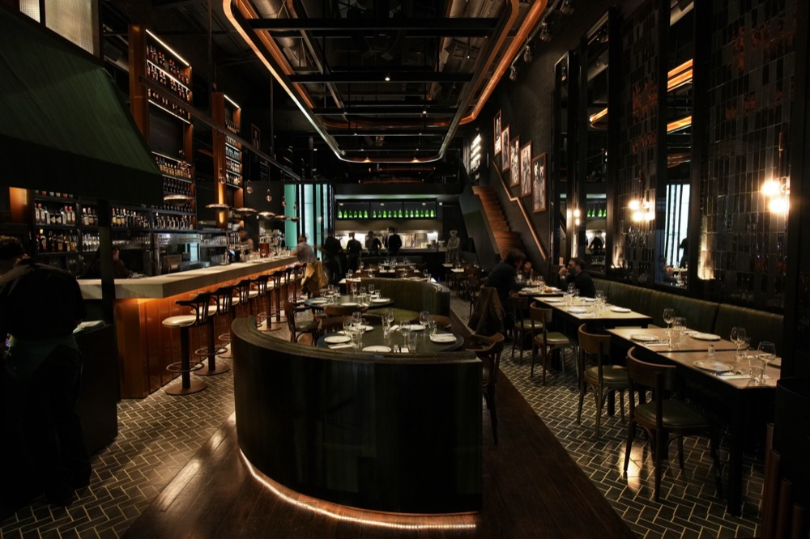
- 4:30 PMShow
Secreto Tango Society
- ReservationBrooke MacLean, party of 4
- LocationPalermo Hollywood
- From hotelAbout 4.5 miles (7 km) across the city, roughly 20 to 30 minutes by car
- Websitesecretotangosociety.com
- 8:00 PM
Polo, Parrilla, Dancing
- MorningExperience
Polo and horseback, about 4 hours
Option 1 or Option 2 below. Pickup and time to be set.
Transportation needed to and from polo, for 4 people.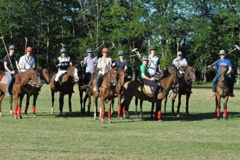
- 7:30-8 PMDinner
Don Julio Parrilla
Time depends on polo. Leave at least 3 hours between getting back, showering and changing, and dinner.
- AddressGuatemala 4699, Palermo
- Rating4.4 stars from 19,958 reviews
- LinksMap
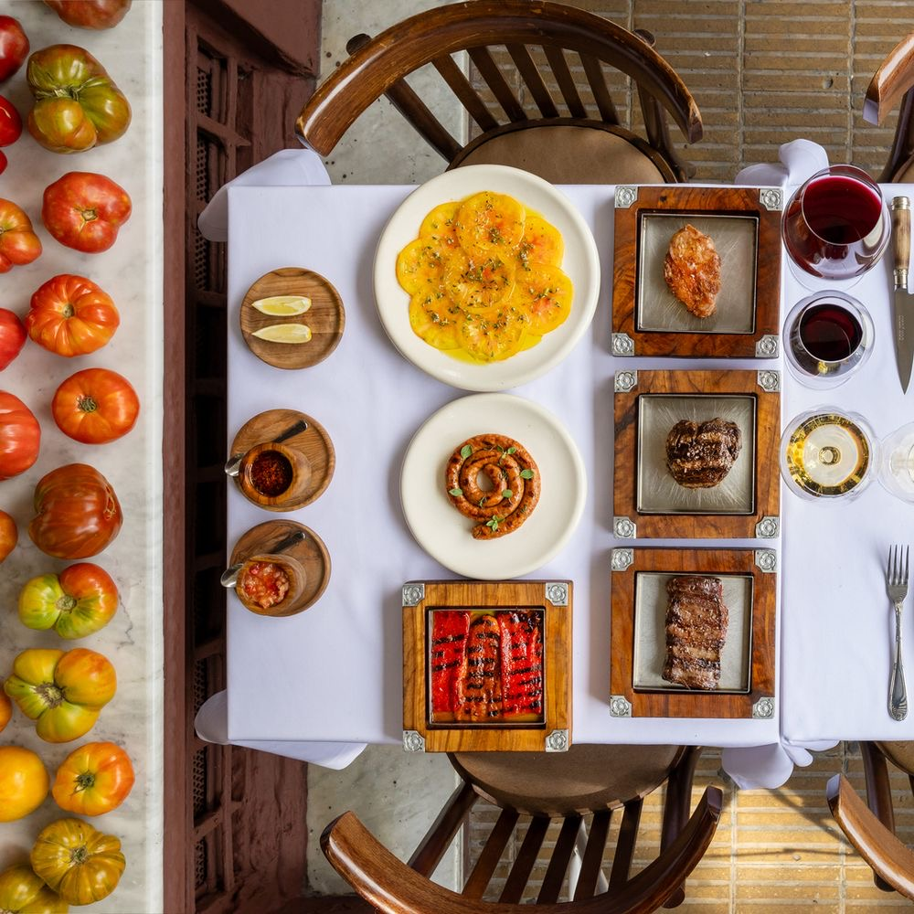
- 9:30 PM
- 11:00 PMOptional · Dancing
Salsa and dancing
- La SalseraWebsite · Sat 8 PM to 5 AM · Yatay 961
- RumbaInternational Latin Rumba · Sat 10 PM to 5:30 AM
- SeshReserve · Map
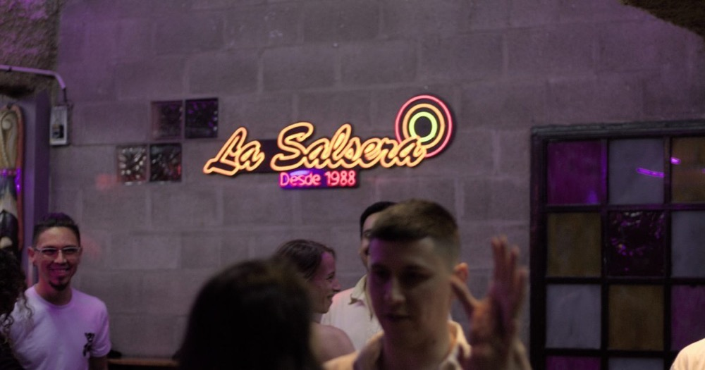
Saturday morning: polo
Pickup is still needed for either option.
Full-day alternatives
If you stay in town
Family Day
- MiddayLunch
Lunch near San Isidro
Open: Sauzalito, Motín del Bajo, Parrilla del Náutico, Blossom. Parrilla del Náutico is open Sunday until 4 PM only.
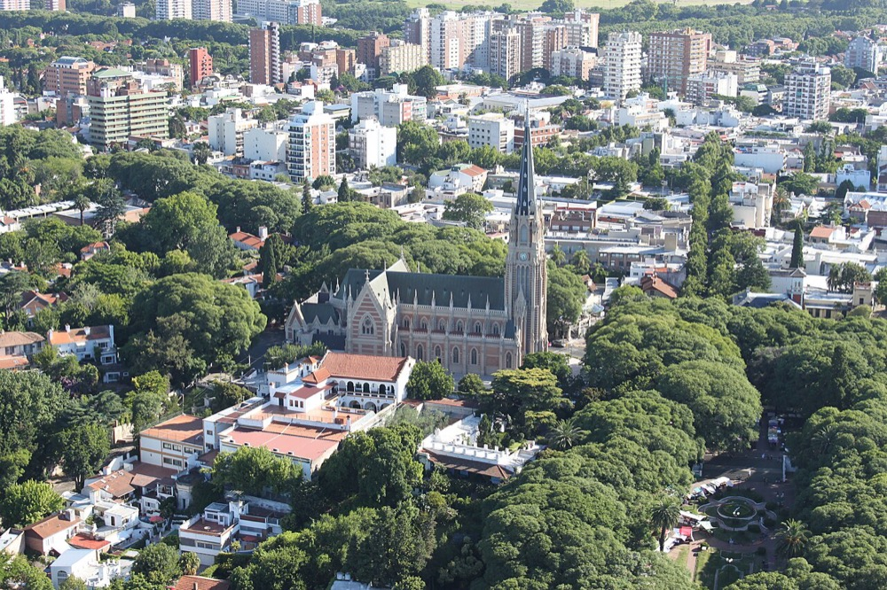
- 3 or 4 PMSailboat
Private sailboat for 4
Sunset is at 7:00 PM. To book. Coordinate transportation, and request food and drinks.
- BoatClassic sailboat on GetMyBoat
- Price$190 per hour, 3-hour minimum, max 6
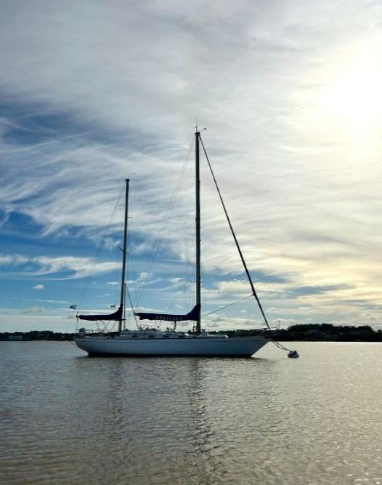
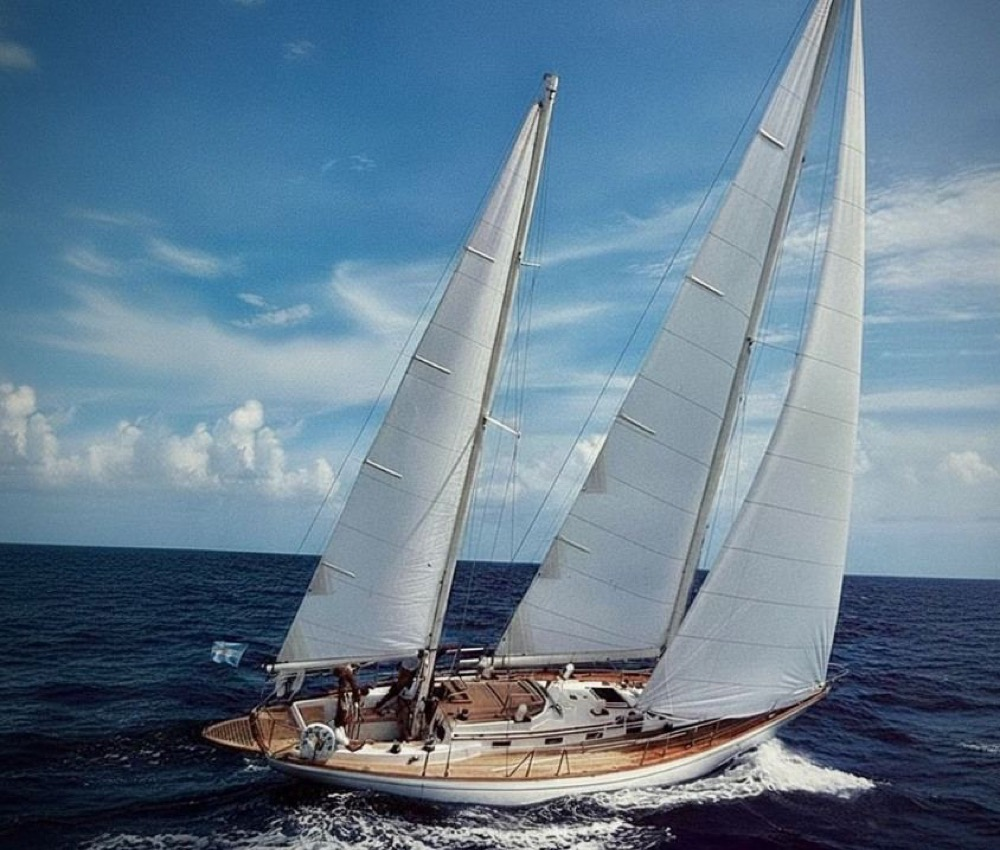
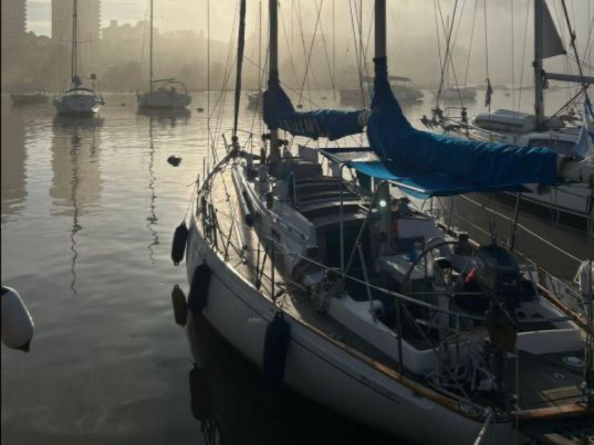
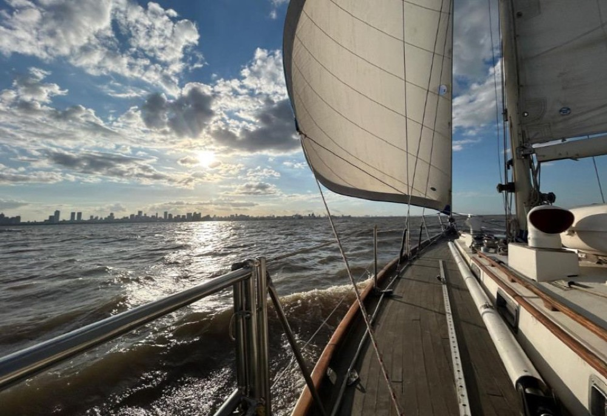
The boat for 4
Lunch near San Isidro
Hasta Luego
- MorningStroll
Calle Arroyo and Recoleta Cemetery
A last stroll on Calle Arroyo, then Recoleta Cemetery, with lunch nearby.
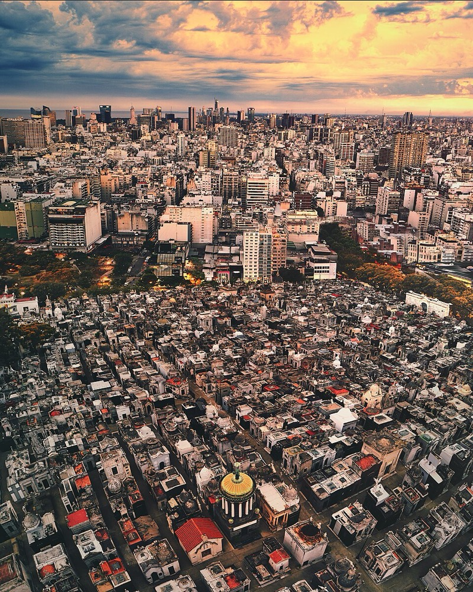
- 2:00 PMCheck-out
Late check-out
Late check-out at Casa Lucía until 2:00 PM.
- 2:40 PMLeave hotelTransfer
Leave for the airport
The driver picks up at Casa Lucía. Driver details are coming.
- 5:00 PMDeparts EZEFlight home
EZE to GRU to ATL
- FlightsDL6349 EZE to São Paulo (GRU)
- DL0104 GRU to Atlanta
- ArrivesTue, Oct 27 · 8:37 AM in Atlanta
After landing, call valet from baggage claim, same number as the drop-off: 800.913.8573, ext. 2